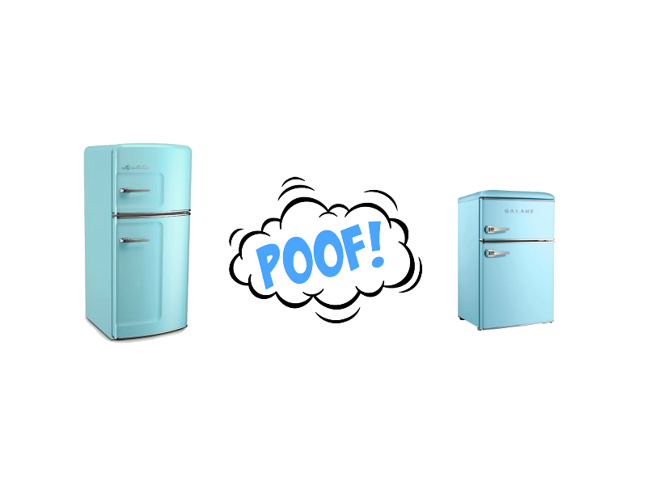
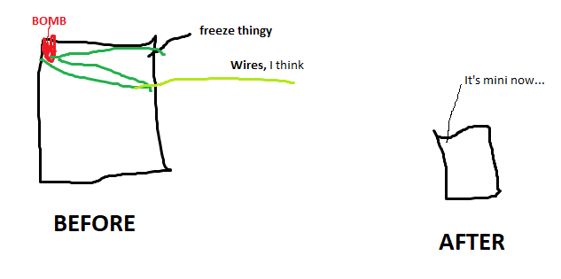

Do you know where mini-fridges come from? You might say the factory or the store. But recent studies done from Shadow Teck University (A communist college) have shown otherwise. Below is a very detailed diagram that explains the Exact process of how mini-fridges came to be.
As you see. Mini Fridges just come from bigger fridges. But I know your all dying to see the science behind it.
So as you see in the diagram above, there is an very crazy process for a fridge to become mini. As a famous poet would say "To be mini, or to not be mini". Any way, There is a thermal nuclear reacter in the frezzer comparment of the "Normal" fridge that sets of a clocked shrink ray which then counts away the seconds the dear fridges life has left. Then boom.